22.2.1. Интегралы, содержащие произведение тригонометрических функций вида ∫sinmxcosnxdx.
- Пусть
 и 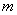 – четные, неотрицательные
числа. 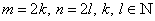.
и 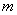 – четные, неотрицательные
числа. 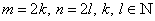.
В подынтегральной функции степени понижаются посредством
перехода к двойному аргументу:
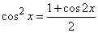
Формула
вычисления синуса половинного аргумента
Формула
вычисления косинуса половинного аргумента
;
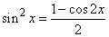
Формула
вычисления синуса двойного аргумента
;
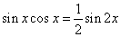.
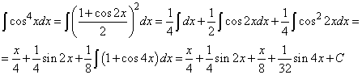.
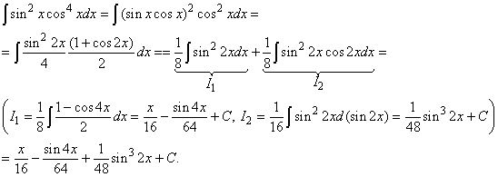.
- Пусть хотя бы одно из чисел и
- нечетное положительное.
От нечетной степени отщепляется один сомножитель и
заносится под знак дифференциала 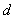, а оставшаяся
подынтегральная функция выражается через функцию, стоящую под знаком
дифференциала по формуле 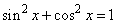.
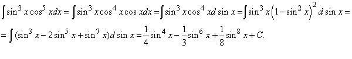;
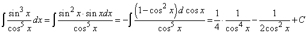
- Пусть и таковы, что 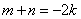, где 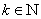, то есть сумма 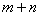 является четным отрицательным
целым. Используется подстановка 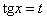, с
использованием формулы:
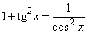
.
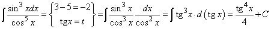